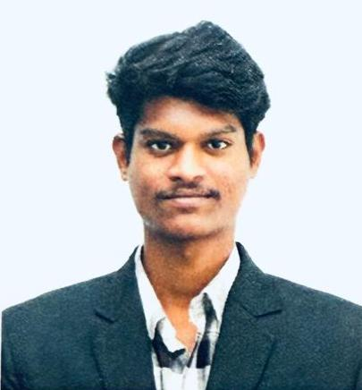

<title>Bhanu Prasad</title>
<link rel="stylesheet" href="https://fonts.googleapis.com/css2?family=Instrument+Serif:ital@0;1&family=IBM+Plex+Sans:wght@400;450;500;600&family=IBM+Plex+Mono:wght@400;500&display=swap">
<style>
/* ==========================================================
   TOKENS — light is the base and the DEFAULT.
   No prefers-color-scheme query: the page opens bright for
   everyone. Dark is opt-in via the toggle (data-mode="dark").
   ========================================================== */
:root{
  --ground:#EAEBE7;
  --ground-2:#E0E2DC;
  --surface:#F5F6F2;
  --surface-2:#DCDED7;
  --ink:#171A16;
  --ink-2:#3D4239;
  --muted:#5F665C;
  --rule:#C7CBC0;
  --rule-soft:#D6D9CF;
  --accent:#8A4B0A;
  --accent-mark:#B9701C;
  --accent-soft:#EFE2D1;
  --glow:rgba(185,112,28,.22);
  --field:23,26,22;          /* canvas point rgb */
  --field-a:.30;
  --serif:"Instrument Serif",Georgia,"Times New Roman",serif;
  --sans:"IBM Plex Sans","Helvetica Neue",Arial,sans-serif;
  --mono:"IBM Plex Mono","SF Mono",Menlo,Consolas,monospace;
  --wide:min(1100px,100% - 3rem);
  --prose:68ch;
}
:root[data-mode="dark"]{
  --ground:#101316;
  --ground-2:#161A1E;
  --surface:#1A1E22;
  --surface-2:#242A30;
  --ink:#EAECE7;
  --ink-2:#C3C8C0;
  --muted:#939B96;
  --rule:#2C3238;
  --rule-soft:#222830;
  --accent:#F0A64A;
  --accent-mark:#E39A3C;
  --accent-soft:#382B1A;
  --glow:rgba(227,154,60,.28);
  --field:234,236,231;
  --field-a:.34;
}

*{box-sizing:border-box;}
html{scroll-behavior:smooth;}
body{
  background:var(--ground);
  color:var(--ink);
  font-family:var(--sans);
  font-size:17px;line-height:1.62;
  -webkit-font-smoothing:antialiased;
  overflow-x:hidden;
  transition:background .45s ease,color .45s ease;
}
::selection{background:var(--accent-soft);color:var(--ink);}
a{color:inherit;}
a:focus-visible,button:focus-visible{outline:2px solid var(--accent-mark);outline-offset:3px;border-radius:2px;}
h1,h2,h3{text-wrap:balance;margin:0;font-weight:400;}
p{margin:0;}
.wrap{width:var(--wide);margin-inline:auto;}
.prose{max-width:var(--prose);}
.eyebrow{font-family:var(--mono);font-size:.75rem;font-weight:500;letter-spacing:.16em;text-transform:uppercase;color:var(--accent);}

/* ==========================================================
   MOTION SYSTEM — resting state is always VISIBLE.
   The pre-animation state is only applied once JS confirms
   motion is allowed (body.anim), so no-JS and reduced-motion
   readers see a finished page.
   ========================================================== */
.reveal{opacity:1;transform:none;}
body.anim .reveal{opacity:0;transform:translateY(18px);transition:opacity .7s cubic-bezier(.22,.7,.3,1),transform .7s cubic-bezier(.22,.7,.3,1);transition-delay:var(--d,0ms);}
body.anim .reveal.in{opacity:1;transform:none;}
@media(prefers-reduced-motion:reduce){
  html{scroll-behavior:auto;}
  body.anim .reveal{opacity:1!important;transform:none!important;}
  *{animation-duration:.001ms!important;animation-iteration-count:1!important;}
}

/* ==========================================================
   TOP BAR + scroll progress
   ========================================================== */
.topbar{position:sticky;top:0;z-index:40;background:color-mix(in srgb,var(--ground) 86%,transparent);backdrop-filter:blur(14px) saturate(1.2);border-bottom:1px solid var(--rule-soft);}
.topbar .wrap{display:flex;align-items:center;justify-content:space-between;gap:1rem;padding-block:.7rem;}
.progress{position:absolute;left:0;bottom:-1px;height:2px;width:0;background:linear-gradient(90deg,var(--accent-mark),var(--accent));box-shadow:0 0 12px var(--glow);}
.mark{font-family:var(--mono);font-size:.8rem;font-weight:500;letter-spacing:.12em;text-transform:uppercase;display:flex;align-items:center;gap:.5rem;}
.dot{width:7px;height:7px;background:var(--accent-mark);border-radius:50%;animation:pulse 2.6s ease-in-out infinite;}
@keyframes pulse{0%,100%{box-shadow:0 0 0 0 var(--glow);opacity:1;}50%{box-shadow:0 0 0 7px transparent;opacity:.55;}}
.navwrap{display:flex;align-items:center;gap:1.4rem;}
.navlinks{display:flex;gap:1.4rem;}
.navlinks a{position:relative;font-family:var(--mono);font-size:.78rem;letter-spacing:.08em;text-transform:uppercase;color:var(--muted);text-decoration:none;padding-block:.2rem;transition:color .2s;}
.navlinks a::after{content:"";position:absolute;left:0;bottom:0;width:100%;height:1px;background:var(--accent-mark);transform:scaleX(0);transform-origin:right;transition:transform .3s cubic-bezier(.22,.7,.3,1);}
.navlinks a:hover{color:var(--ink);}
.navlinks a:hover::after{transform:scaleX(1);transform-origin:left;}
@media(max-width:820px){.navlinks{display:none;}}
.toggle{display:flex;align-items:center;gap:.45rem;font-family:var(--mono);font-size:.72rem;letter-spacing:.1em;text-transform:uppercase;color:var(--muted);background:var(--surface);border:1px solid var(--rule);padding:.36rem .6rem;cursor:pointer;transition:border-color .2s,color .2s;}
.toggle:hover{border-color:var(--accent-mark);color:var(--accent);}
.toggle .icon{width:12px;height:12px;position:relative;display:inline-block;}
.toggle .icon::before{content:"";position:absolute;inset:0;border-radius:50%;border:1.5px solid currentColor;}
.toggle .icon::after{content:"";position:absolute;inset:0;border-radius:50%;background:currentColor;clip-path:inset(0 0 0 50%);transition:clip-path .45s cubic-bezier(.22,.7,.3,1);}
:root[data-mode="dark"] .toggle .icon::after{clip-path:inset(0 50% 0 0);}

/* ==========================================================
   HERO — latent-space canvas behind the type
   ========================================================== */
.hero{position:relative;padding-block:clamp(3rem,8vw,6rem) clamp(2.5rem,5vw,4rem);overflow:hidden;}
#field{position:absolute;inset:0;width:100%;height:100%;display:block;pointer-events:none;
  -webkit-mask-image:linear-gradient(100deg,transparent 0%,transparent 26%,#000 62%,#000 100%);
          mask-image:linear-gradient(100deg,transparent 0%,transparent 26%,#000 62%,#000 100%);}
.hero .wrap{position:relative;z-index:2;}
.hero-grid{display:grid;gap:clamp(1.75rem,4vw,3rem);grid-template-columns:210px minmax(0,1fr);align-items:start;}
@media(max-width:700px){.hero-grid{grid-template-columns:1fr;}#field{mask-image:linear-gradient(180deg,transparent 0%,#000 70%);-webkit-mask-image:linear-gradient(180deg,transparent 0%,#000 70%);}}

.portrait{position:relative;width:210px;max-width:100%;border:1px solid var(--rule);background:var(--surface);padding:8px;transition:transform .5s cubic-bezier(.22,.7,.3,1),box-shadow .5s;}
.portrait::before,.portrait::after{content:"";position:absolute;width:14px;height:14px;border:1.5px solid var(--accent-mark);opacity:0;transition:opacity .4s,transform .4s;}
.portrait::before{top:-5px;left:-5px;border-right:none;border-bottom:none;transform:translate(5px,5px);}
.portrait::after{bottom:-5px;right:-5px;border-left:none;border-top:none;transform:translate(-5px,-5px);}
.portrait:hover{transform:translateY(-4px);box-shadow:0 16px 40px -18px rgba(0,0,0,.4);}
.portrait:hover::before,.portrait:hover::after{opacity:1;transform:translate(0,0);}
.portrait img{display:block;width:100%;height:auto;filter:saturate(1.05);}
.portrait figcaption{font-family:var(--mono);font-size:.6875rem;letter-spacing:.1em;text-transform:uppercase;color:var(--muted);padding-top:8px;margin-top:8px;border-top:1px solid var(--rule-soft);display:flex;justify-content:space-between;}

h1{font-family:var(--serif);font-size:clamp(3.4rem,12vw,7.5rem);line-height:.9;letter-spacing:-.02em;margin-bottom:1.1rem;}
h1 .ch{display:inline-block;white-space:pre;}
body.anim h1 .ch{opacity:0;transform:translateY(.42em) rotate(3deg);animation:drop .82s cubic-bezier(.2,.75,.25,1) forwards;animation-delay:calc(var(--n) * 34ms + 120ms);}
@keyframes drop{to{opacity:1;transform:none;}}
.thesis{font-family:var(--serif);font-style:italic;font-size:clamp(1.45rem,3.2vw,2.15rem);line-height:1.3;color:var(--ink-2);max-width:27ch;margin-bottom:1.6rem;}
.thesis em{font-style:normal;color:var(--accent);position:relative;}
.thesis em::after{content:"";position:absolute;left:0;bottom:.08em;width:100%;height:2px;background:var(--accent-mark);transform-origin:left;transform:scaleX(1);}
body.anim .thesis em::after{transform:scaleX(0);animation:draw .7s cubic-bezier(.22,.7,.3,1) forwards;animation-delay:1.15s;}
@keyframes draw{to{transform:scaleX(1);}}
.statusline{font-family:var(--mono);font-size:.78rem;letter-spacing:.05em;text-transform:uppercase;color:var(--muted);border-top:1px solid var(--rule);border-bottom:1px solid var(--rule);padding-block:.7rem;margin-bottom:1.5rem;display:flex;flex-wrap:wrap;gap:.35rem .9rem;}
.statusline span{white-space:nowrap;}
.statusline span+span::before{content:"·";color:var(--rule);margin-right:.9rem;}
.links{display:flex;flex-wrap:wrap;gap:.6rem;}
.links a{position:relative;overflow:hidden;font-family:var(--mono);font-size:.8rem;letter-spacing:.04em;text-decoration:none;color:var(--ink);border:1px solid var(--rule);background:var(--surface);padding:.5rem .9rem;transition:color .3s,border-color .3s;z-index:0;}
.links a::before{content:"";position:absolute;inset:0;background:var(--accent-soft);transform:translateY(101%);transition:transform .35s cubic-bezier(.22,.7,.3,1);z-index:-1;}
.links a:hover{border-color:var(--accent-mark);color:var(--accent);}
.links a:hover::before{transform:translateY(0);}
.links a.primary{color:#FFF7EC;background:var(--accent);border-color:var(--accent);font-weight:500;}
:root[data-mode="dark"] .links a.primary{color:#14171A;}
.links a.primary::before{background:var(--accent-mark);}
.links a.primary:hover{color:#FFF7EC;border-color:var(--accent-mark);}
:root[data-mode="dark"] .links a.primary:hover{color:#14171A;}
.links a.primary .arw{display:inline-block;transition:transform .3s cubic-bezier(.22,.7,.3,1);}
.links a.primary:hover .arw{transform:translateY(3px);}

/* ==========================================================
   SECTIONS
   ========================================================== */
section{padding-block:clamp(2.75rem,5.5vw,4.25rem);border-top:1px solid var(--rule);position:relative;}
.sechead{display:flex;align-items:baseline;gap:1rem;margin-bottom:2rem;flex-wrap:wrap;}
.sechead h2{font-family:var(--serif);font-size:clamp(2.05rem,4.3vw,2.9rem);line-height:1.08;}
.sechead .count{font-family:var(--mono);font-size:.78rem;color:var(--muted);letter-spacing:.08em;margin-left:auto;}
.approach p{font-size:1.125rem;color:var(--ink-2);}
.approach p+p{margin-top:1rem;}
.approach strong{color:var(--ink);font-weight:500;}

/* ==========================================================
   PROJECTS
   ========================================================== */
.project{position:relative;padding:clamp(1.6rem,3.4vw,2.3rem) 0 clamp(2rem,4vw,2.75rem) clamp(1rem,2.4vw,1.6rem);border-top:1px dashed var(--rule);margin-left:-.2rem;transition:background .4s;}
.project::before{content:"";position:absolute;left:0;top:0;bottom:0;width:2px;background:var(--accent-mark);transform:scaleY(0);transform-origin:top;transition:transform .5s cubic-bezier(.22,.7,.3,1);}
.project:hover::before{transform:scaleY(1);}
.project:first-of-type{border-top:none;padding-top:0;}
.p-head{display:flex;justify-content:space-between;align-items:baseline;gap:1rem;flex-wrap:wrap;}
.p-head h3{font-family:var(--serif);font-size:clamp(1.68rem,3.5vw,2.3rem);line-height:1.12;}
.p-date{font-family:var(--mono);font-size:.78rem;color:var(--muted);letter-spacing:.06em;white-space:nowrap;}
.award{display:inline-flex;align-items:center;gap:.45rem;margin-top:.6rem;font-family:var(--mono);font-size:.75rem;font-weight:500;letter-spacing:.08em;text-transform:uppercase;color:var(--accent);background:var(--accent-soft);border:1px solid var(--accent-mark);padding:.3rem .65rem;position:relative;overflow:hidden;}
.award::after{content:"";position:absolute;top:0;left:-120%;width:60%;height:100%;background:linear-gradient(90deg,transparent,var(--glow),transparent);animation:sheen 4.2s ease-in-out infinite;}
@keyframes sheen{0%,55%{left:-120%;}85%,100%{left:130%;}}
.p-lede{margin-top:.95rem;font-size:1.125rem;color:var(--ink-2);max-width:var(--prose);}

/* pipeline — signal propagates stage to stage */
.pipeline{margin-top:1.4rem;overflow-x:auto;border:1px solid var(--rule);background:var(--surface);}
.pipeline ol{display:flex;margin:0;padding:0;list-style:none;min-width:max-content;}
.pipeline li{position:relative;font-family:var(--mono);font-size:.75rem;letter-spacing:.01em;padding:.72rem .78rem;color:var(--ink-2);white-space:nowrap;border-right:1px solid var(--rule-soft);display:flex;align-items:center;gap:.5rem;overflow:hidden;}
.pipeline li:last-child{border-right:none;}
.pipeline li b{font-weight:500;color:var(--muted);font-size:.6875rem;transition:color .3s;}
.pipeline li::after{content:"";position:absolute;inset:0;background:var(--accent-soft);opacity:0;}
body.anim .pipeline.live li::after{animation:signal 4.4s linear infinite;animation-delay:calc(var(--i) * 190ms);}
@keyframes signal{0%,100%{opacity:0;}4%{opacity:1;}16%{opacity:0;}}
.pipeline li.gate{color:var(--accent);font-weight:500;}
.pipeline li.gate b{color:var(--accent-mark);}

/* metric rail */
.metrics{display:grid;gap:1px;margin-top:1.4rem;grid-template-columns:repeat(auto-fit,minmax(152px,1fr));background:var(--rule);border:1px solid var(--rule);}
.metric{background:var(--surface);padding:.9rem 1rem;transition:background .3s;}
.metric:hover{background:var(--ground-2);}
.metric dt{font-family:var(--mono);font-size:.6875rem;letter-spacing:.11em;text-transform:uppercase;color:var(--muted);margin-bottom:.3rem;}
.metric dd{margin:0;font-family:var(--mono);font-size:1.28rem;font-weight:500;font-variant-numeric:tabular-nums;color:var(--ink);}
.metric dd small{font-size:.78rem;font-weight:400;color:var(--muted);}

.detail{margin:1.4rem 0 0;padding:0;list-style:none;max-width:var(--prose);}
.detail li{position:relative;padding-left:1.35rem;margin-bottom:.65rem;color:var(--ink-2);}
.detail li::before{content:"";position:absolute;left:0;top:.62em;width:.55rem;height:1px;background:var(--accent-mark);transition:width .3s;}
.detail li:hover::before{width:.95rem;}
.detail b{font-weight:500;color:var(--ink);}
.detail code{font-family:var(--mono);font-size:.875em;background:var(--surface-2);padding:.05em .3em;}

.note{margin-top:1.4rem;max-width:var(--prose);border-left:2px solid var(--accent-mark);background:var(--surface);padding:.95rem 1.15rem;font-size:1rem;color:var(--ink-2);}
.note b{font-family:var(--mono);font-size:.73rem;letter-spacing:.1em;text-transform:uppercase;color:var(--accent);display:block;margin-bottom:.3rem;font-weight:500;}

.p-foot{margin-top:1.4rem;display:flex;flex-wrap:wrap;gap:.5rem .9rem;align-items:center;padding-top:.95rem;border-top:1px solid var(--rule-soft);}
.chip{font-family:var(--mono);font-size:.75rem;color:var(--muted);border:1px solid var(--rule);padding:.22rem .55rem;transition:border-color .25s,color .25s,transform .25s;}
.chip:hover{border-color:var(--accent-mark);color:var(--accent);transform:translateY(-2px);}
.repo{font-family:var(--mono);font-size:.78rem;color:var(--accent);text-decoration:none;border-bottom:1px solid var(--accent-soft);margin-left:auto;word-break:break-all;transition:border-color .25s;}
.repo:hover{border-bottom-color:var(--accent-mark);}
@media(max-width:640px){.repo{margin-left:0;}}

/* ==========================================================
   ABSTENTION READOUT — single series, values always visible
   ========================================================== */
figure.readout{margin:1.7rem 0 0;max-width:var(--prose);}
figure.readout figcaption{font-family:var(--mono);font-size:.75rem;letter-spacing:.09em;text-transform:uppercase;color:var(--muted);margin-bottom:.75rem;}
figure.readout figcaption b{color:var(--ink);font-weight:500;}
table.bars{width:100%;border-collapse:collapse;font-size:.9375rem;}
table.bars th{font-family:var(--mono);font-size:.6875rem;font-weight:500;letter-spacing:.1em;text-transform:uppercase;color:var(--muted);text-align:left;padding:0 .6rem .45rem 0;border-bottom:1px solid var(--rule);}
table.bars th.num,table.bars td.num{text-align:right;font-variant-numeric:tabular-nums;}
table.bars td{padding:.52rem .6rem .52rem 0;border-bottom:1px solid var(--rule-soft);vertical-align:middle;}
table.bars td:first-child{color:var(--ink);}
table.bars td.num{font-family:var(--mono);color:var(--ink);width:1%;white-space:nowrap;}
table.bars td.want{font-family:var(--mono);font-size:.75rem;color:var(--muted);width:1%;white-space:nowrap;}
.track{width:100%;min-width:90px;height:10px;background:var(--surface-2);}
.fill{height:100%;background:var(--accent-mark);border-radius:0 4px 4px 0;transition:width 1.15s cubic-bezier(.22,.7,.3,1);}

/* ==========================================================
   CAPABILITIES
   ========================================================== */
.caps{display:grid;gap:1px;background:var(--rule);border:1px solid var(--rule);grid-template-columns:repeat(auto-fit,minmax(262px,1fr));}
.cap{position:relative;background:var(--surface);padding:1.2rem 1.2rem;overflow:hidden;transition:background .35s;}
.cap::before{content:"";position:absolute;left:0;right:0;top:0;height:2px;background:var(--accent-mark);transform:scaleX(0);transform-origin:left;transition:transform .45s cubic-bezier(.22,.7,.3,1);}
.cap:hover{background:var(--ground-2);}
.cap:hover::before{transform:scaleX(1);}
.cap h3{font-family:var(--mono);font-size:.75rem;font-weight:500;letter-spacing:.11em;text-transform:uppercase;color:var(--accent);margin-bottom:.65rem;}
.cap p{font-size:1rem;color:var(--ink-2);}

/* ==========================================================
   SIGNALS
   ========================================================== */
.signals{display:grid;gap:1.4rem;max-width:var(--prose);}
.signal{display:grid;grid-template-columns:auto minmax(0,1fr);gap:1rem;align-items:start;}
.signal .tag{font-family:var(--mono);font-size:.6875rem;letter-spacing:.1em;text-transform:uppercase;color:var(--muted);border:1px solid var(--rule);padding:.26rem .55rem;white-space:nowrap;margin-top:.15rem;transition:border-color .25s,color .25s;}
.signal:hover .tag{border-color:var(--accent-mark);color:var(--accent);}
.signal h3{font-size:1.0625rem;font-weight:500;font-family:var(--sans);}
.signal p{font-size:1rem;color:var(--muted);margin-top:.2rem;}

/* ==========================================================
   CONTACT
   ========================================================== */
.contact-inner{display:flex;flex-wrap:wrap;gap:2rem;align-items:end;justify-content:space-between;}
.contact h2{font-family:var(--serif);font-size:clamp(2.1rem,5.5vw,3.6rem);line-height:1.02;max-width:16ch;}
a.mail{font-family:var(--mono);font-size:clamp(.9rem,2vw,1.05rem);color:var(--accent);text-decoration:none;border-bottom:1px solid var(--accent-mark);padding-bottom:.15rem;word-break:break-all;}
footer{border-top:1px solid var(--rule);padding-block:1.5rem 2.5rem;font-family:var(--mono);font-size:.75rem;letter-spacing:.06em;text-transform:uppercase;color:var(--muted);display:flex;flex-wrap:wrap;gap:.5rem 1.5rem;justify-content:space-between;}
</style>

<header class="topbar">
  <div class="wrap">
    <div class="mark"><span class="dot" aria-hidden="true"></span>Bhanu Prasad</div>
    <div class="navwrap">
      <nav class="navlinks">
        <a href="#approach">Approach</a>
        <a href="#work">Work</a>
        <a href="#capabilities">Capabilities</a>
        <a href="#signals">Signals</a>
        <a href="#contact">Contact</a>
      </nav>
      <button class="toggle" id="themeBtn" type="button" aria-pressed="false">
        <span class="icon" aria-hidden="true"></span><span id="themeLabel">Dark</span>
      </button>
    </div>
  </div>
  <div class="progress" id="progress"></div>
</header>

<main>

<!-- ==================== HERO ==================== -->
<div class="hero">
  <canvas id="field" aria-hidden="true"></canvas>
  <div class="wrap">
    <div class="hero-grid">
      <figure class="portrait reveal" style="--d:80ms">
        
        <figcaption><span>Hyderabad</span><span>IN</span></figcaption>
      </figure>
      <div>
        <h1 id="name">Bhanu Prasad</h1>
        <p class="thesis reveal" style="--d:520ms">I build LLM systems that are measured and controlled — <em>not just demoed.</em></p>
        <div class="statusline reveal" style="--d:640ms">
          <span>Final-year B.Tech</span>
          <span>CSE · AI &amp; Machine Learning</span>
          <span>Aurora University</span>
          <span>Batch 2027</span>
        </div>
        <div class="links reveal" style="--d:740ms">
          <a class="primary" href="https://github.com/bhanu964/bhanuportfolio/raw/main/resume/Bhanu_Prasad_Resume.pdf" target="_blank" rel="noopener">Download résumé <span class="arw" aria-hidden="true">↓</span></a>
          <a href="https://github.com/bhanu964" target="_blank" rel="noopener">github.com/bhanu964</a>
          <a href="https://www.kaggle.com/restlesseagle" target="_blank" rel="noopener">kaggle.com/restlesseagle</a>
          <a href="mailto:bhanuprasadavanaganti@gmail.com">Email</a>
        </div>
      </div>
    </div>
  </div>
</div>

<!-- ==================== APPROACH ==================== -->
<section id="approach" class="wrap approach">
  <div class="sechead reveal"><span class="eyebrow">Approach</span><h2>The interesting part isn't the answer. It's the refusal.</h2></div>
  <div class="prose">
    <p class="reveal" style="--d:60ms">Getting a language model to produce something is easy. Getting it to <strong>decline when it shouldn't answer</strong> is the engineering problem — and it's the one that decides whether a system can run unattended on work that matters.</p>
    <p class="reveal" style="--d:140ms">So the things I build carry a control layer: retrieval that's grounded in a real corpus, citations validated against what was actually retrieved, similarity floors calibrated against labelled negatives, schema validation with a repair path, retries scoped to the errors worth retrying, and fallbacks that degrade instead of failing. Every number on this page came off a benchmark I ran, not an estimate.</p>
    <p class="reveal" style="--d:220ms">I'm a final-year B.Tech student. I'm not going to claim production scale. What I can claim is that the four systems below are instrumented, tested, containerised, and honest about their own limits.</p>
  </div>
</section>

<!-- ==================== WORK ==================== -->
<section id="work" class="wrap">
  <div class="sechead reveal"><span class="eyebrow">Selected Work</span><h2>Four systems</h2><span class="count">2026</span></div>

  <!-- P1 -->
  <article class="project reveal">
    <div class="p-head"><h3>Voice-Enabled RAG over Indic Text</h3><span class="p-date">Aug 2026</span></div>
    <p class="p-lede">Ask a question out loud in Hindi or English; get back an answer that is grounded in a retrieved passage and carries a citation you can check — or an honest refusal.</p>

    <div class="pipeline live">
      <ol>
        <li style="--i:0"><b>01</b> voice in</li>
        <li style="--i:1"><b>02</b> Sarvam STT</li>
        <li style="--i:2"><b>03</b> e5 embedding</li>
        <li style="--i:3"><b>04</b> FAISS ∥ BM25</li>
        <li style="--i:4"><b>05</b> RRF fusion</li>
        <li style="--i:5" class="gate"><b>06</b> gate</li>
        <li style="--i:6"><b>07</b> Groq LLM</li>
        <li style="--i:7" class="gate"><b>08</b> citation check</li>
        <li style="--i:8"><b>09</b> cited answer</li>
      </ol>
    </div>

    <dl class="metrics">
      <div class="metric"><dt>Retrieval P50</dt><dd><span data-count>23.10</span> <small>ms</small></dd></div>
      <div class="metric"><dt>Retrieval P100</dt><dd><span data-count>50.94</span> <small>ms</small></dd></div>
      <div class="metric"><dt>Corpus</dt><dd><span data-count>20,000</span> <small>passages</small></dd></div>
      <div class="metric"><dt>Index</dt><dd><span data-count>22,304</span> <small>chunks</small></dd></div>
      <div class="metric"><dt>Embedding</dt><dd><span data-count>384</span> <small>dim</small></dd></div>
    </dl>

    <ul class="detail">
      <li><b>Hybrid retrieval.</b> A FAISS inner-product index for dense recall, paired with a BM25 inverted index I wrote by hand — measured 42× faster than <code>rank_bm25</code> — and combined with Reciprocal Rank Fusion at k=60.</li>
      <li><b>Three gates.</b> A pre-retrieval safety screen across English and Devanagari; a post-retrieval cosine floor set to 0.85, calibrated with Youden's J against 30 in-domain and 20 negative queries; and a post-generation check that rejects any citation not traceable to a retrieved chunk.</li>
      <li><b>Failure handling.</b> Pydantic schemas on every LLM response, one automatic repair retry that feeds the validation error back into the prompt, then abstention. Network calls retry with exponential backoff and jitter — but only on 5xx, timeout and 429; a 401 fails immediately.</li>
      <li><b>Instrumented end to end.</b> Per-stage timers showed 91% of user-facing latency is provider queueing and network, not local compute — local work totals 23 ms.</li>
    </ul>

    <figure class="readout">
      <figcaption>Measured abstention rate by query type — <b>50 labelled queries</b></figcaption>
      <table class="bars">
        <thead><tr><th scope="col">Query type</th><th scope="col">Abstains</th><th scope="col" class="num">Rate</th><th scope="col" class="num">n</th><th scope="col">Want</th></tr></thead>
        <tbody>
          <tr><td>Unsafe</td><td><div class="track"><div class="fill" style="width:100%"></div></div></td><td class="num">100%</td><td class="num">5</td><td class="want">high</td></tr>
          <tr><td>Off-topic</td><td><div class="track"><div class="fill" style="width:100%"></div></div></td><td class="num">100%</td><td class="num">5</td><td class="want">high</td></tr>
          <tr><td>Near-miss</td><td><div class="track"><div class="fill" style="width:100%"></div></div></td><td class="num">100%</td><td class="num">10</td><td class="want">high</td></tr>
          <tr><td>In-domain</td><td><div class="track"><div class="fill" style="width:23.3%"></div></div></td><td class="num">23.3%</td><td class="num">30</td><td class="want">low</td></tr>
        </tbody>
      </table>
    </figure>

    <div class="note">
      <b>What I threw away</b>
      I benchmarked four chunking strategies over 330 queries. The best scorer reached 0.7344 Recall@5 — and I shipped a different one. Its lead came from the source query leaking into chunk headers; under paraphrase it lost 0.133 recall. A contaminated benchmark is worse than no benchmark, so it didn't ship.
    </div>

    <div class="p-foot">
      <span class="chip">Python</span><span class="chip">FAISS</span><span class="chip">BM25</span>
      <span class="chip">sentence-transformers</span><span class="chip">Groq</span><span class="chip">Pydantic</span>
      <span class="chip">Tenacity</span><span class="chip">Docker</span>
      <a class="repo" href="https://github.com/bhanu964/voice-rag-indic" target="_blank" rel="noopener">github.com/bhanu964/voice-rag-indic ↗</a>
    </div>
  </article>

  <!-- P2 -->
  <article class="project reveal">
    <div class="p-head"><h3>CareerVolt — Multi-Agent LLM Platform</h3><span class="p-date">Aug 2026</span></div>
    <div><span class="award">Winner · Algorand x402 Web3 Hackathon</span></div>
    <p class="p-lede">Five task-specialised LLM agents behind pay-per-call HTTP endpoints, settled in USDC on Algorand — built so the whole thing still works when the model is switched out, or removed entirely.</p>

    <dl class="metrics">
      <div class="metric"><dt>Agents</dt><dd><span data-count>5</span> <small>endpoints</small></dd></div>
      <div class="metric"><dt>LLM providers</dt><dd><span data-count>4</span> <small>interchangeable</small></dd></div>
      <div class="metric"><dt>Skill taxonomy</dt><dd><span data-count>120</span>+ <small>skills</small></dd></div>
      <div class="metric"><dt>Role profiles</dt><dd><span data-count>12</span></dd></div>
    </dl>

    <ul class="detail">
      <li><b>The agents.</b> Resume analysis, JD matching, career roadmap, job-market mapping, and a context-aware copilot — each independently priced and independently callable.</li>
      <li><b>Provider-agnostic bridge.</b> One base-URL config routes to Gemini, Groq, DeepSeek or any OpenAI-compatible endpoint. Responses are constrained to JSON against a declared schema hint, markdown fences stripped, calls bounded by an AbortController timeout.</li>
      <li><b>Degrades, doesn't fail.</b> With no API key present, a rule engine takes over and every agent stays functional. The failure mode is reduced quality, not a stack trace.</li>
      <li><b>Document intake.</b> PDF and DOCX resumes are parsed to text in-browser, then fed to structured LLM extraction of skills, roles and education against the taxonomy.</li>
    </ul>

    <div class="note">
      <b>Credit where it's due</b>
      The x402 payment middleware, exact-payment scheme, facilitator integration and wallet-connect flow come from the MIT-licensed x402 starter kit. My work is the agent layer, the LLM bridge, the fallback engine and the endpoint design.
    </div>

    <div class="p-foot">
      <span class="chip">TypeScript</span><span class="chip">Hono</span><span class="chip">React</span>
      <span class="chip">Gemini</span><span class="chip">Groq</span><span class="chip">Algorand</span><span class="chip">x402</span>
      <a class="repo" href="https://github.com/bhanu964/careervolt" target="_blank" rel="noopener">github.com/bhanu964/careervolt ↗</a>
    </div>
  </article>

  <!-- P3 -->
  <article class="project reveal">
    <div class="p-head"><h3>Face-Evidence Verification Pipeline</h3><span class="p-date">Sep 2026</span></div>
    <p class="p-lede">Identify a face against live web results, then produce a record of that decision that nobody — including me — can quietly edit afterwards.</p>

    <div class="pipeline live">
      <ol>
        <li style="--i:0"><b>01</b> detect</li>
        <li style="--i:1"><b>02</b> ArcFace embed</li>
        <li style="--i:2"><b>03</b> Google Lens search</li>
        <li style="--i:3"><b>04</b> tier candidates</li>
        <li style="--i:4" class="gate"><b>05</b> cosine verify</li>
        <li style="--i:5"><b>06</b> canonical record</li>
        <li style="--i:6"><b>07</b> anchor hash</li>
        <li style="--i:7" class="gate"><b>08</b> read back</li>
      </ol>
    </div>

    <dl class="metrics">
      <div class="metric"><dt>Embedding</dt><dd><span data-count>512</span> <small>dim</small></dd></div>
      <div class="metric"><dt>Match threshold</dt><dd><span data-count>0.45</span> <small>cosine</small></dd></div>
      <div class="metric"><dt>On-chain payload</dt><dd><span data-count>32</span> <small>bytes</small></dd></div>
      <div class="metric"><dt>CI matrix</dt><dd>3.11–3.13</dd></div>
    </dl>

    <ul class="detail">
      <li><b>CPU-only inference.</b> RetinaFace detection and ArcFace encoding run on ONNX Runtime — no GPU, no PyTorch in the deployment path.</li>
      <li><b>Live search, not a fixture.</b> Candidates come from SerpApi's Google Lens engine with caching disabled, then get platform-tiered and de-duplicated before any image is downloaded.</li>
      <li><b>Audit trail by construction.</b> Each decision produces a deterministic canonical-JSON record — platform, URL, image SHA-256, similarity score, and the threshold that was in force. Only its 32-byte digest goes on-chain; biometric vectors never leave the host.</li>
      <li><b>Verifiable after the fact.</b> A separate path reads the record back from chain, recomputes the digest locally and compares, with distinct exit codes for verified, no-match and operational error.</li>
      <li><b>Shipped like software.</b> Modular Python packages, pytest across a 3.11/3.12/3.13 GitHub Actions matrix, a Solidity ABI drift check, a FastAPI upload interface, and a Docker image.</li>
    </ul>

    <div class="p-foot">
      <span class="chip">Python</span><span class="chip">FastAPI</span><span class="chip">ONNX Runtime</span>
      <span class="chip">InsightFace</span><span class="chip">SerpApi</span><span class="chip">web3.py</span>
      <span class="chip">Solidity</span><span class="chip">GitHub Actions</span>
      <a class="repo" href="https://github.com/bhanu964/hh-goa-task3" target="_blank" rel="noopener">github.com/bhanu964/hh-goa-task3 ↗</a>
    </div>
  </article>

  <!-- P4 -->
  <article class="project reveal">
    <div class="p-head"><h3>Genetic Disorder Prediction</h3><span class="p-date">Apr 2026</span></div>
    <p class="p-lede">A multi-class clinical classification pipeline, trained off my machine — my first end-to-end run on managed cloud training rather than a notebook.</p>
    <ul class="detail">
      <li>Random Forest, SVM, Logistic Regression and KNN compared under K-fold cross-validation, selected on held-out accuracy with ROC curves and confusion matrices rather than a single headline score.</li>
      <li>Encoding, scaling and missing-value handling upstream; training executed on Google Vertex AI with the selected model persisted as a versioned artifact to Google Cloud Storage.</li>
    </ul>
    <div class="p-foot">
      <span class="chip">Python</span><span class="chip">scikit-learn</span>
      <span class="chip">Google Vertex AI</span><span class="chip">Cloud Storage</span>
      <a class="repo" href="https://github.com/bhanu964/-genetic-disorder-ml" target="_blank" rel="noopener">github.com/bhanu964/-genetic-disorder-ml ↗</a>
    </div>
  </article>
</section>

<!-- ==================== CAPABILITIES ==================== -->
<section id="capabilities" class="wrap">
  <div class="sechead reveal"><span class="eyebrow">Capabilities</span><h2>What I can defend in a room</h2></div>
  <div class="caps reveal">
    <div class="cap"><h3>Languages &amp; Core</h3><p>Python, TypeScript/JavaScript, SQL, workflow automation with n8n, data structures &amp; algorithms, OOP, Git.</p></div>
    <div class="cap"><h3>Generative AI &amp; LLM</h3><p>RAG pipelines, prompt engineering, embeddings, hybrid retrieval, rank fusion, groundedness &amp; citation validation, structured JSON output, abstention guardrails, multi-provider routing.</p></div>
    <div class="cap"><h3>Backend &amp; APIs</h3><p>FastAPI, Uvicorn, REST design, Pydantic validation, retry and timeout control, third-party API integration across SerpApi, Sarvam AI and Groq.</p></div>
    <div class="cap"><h3>DevOps &amp; Cloud</h3><p>Docker, GitHub Actions CI with test matrices, pytest, Google Vertex AI, Google Cloud Storage, Render and Hugging Face Spaces deployment.</p></div>
  </div>
</section>

<!-- ==================== SIGNALS ==================== -->
<section id="signals" class="wrap">
  <div class="sechead reveal"><span class="eyebrow">Signals</span><h2>Outside the repos</h2></div>
  <div class="signals">
    <div class="signal reveal"><span class="tag">Award</span><div><h3>Winner — Algorand x402 Web3 Hackathon</h3><p>For CareerVolt, the multi-agent LLM platform above.</p></div></div>
    <div class="signal reveal" style="--d:80ms"><span class="tag">Research</span><div><h3>“AI-Powered Credit Card Fraud Detection”</h3><p>Oral presentation, 4th International Conference on Advancements in Science, Engineering and Technology (ICASET 2026) — School of Computing, Vidya Vihar Institute of Technology, Purnea. June 2026.</p></div></div>
    <div class="signal reveal" style="--d:160ms"><span class="tag">Certified</span><div><h3>AI–Machine Learning Engineer · 150 hours</h3><p>Reliance Foundation Skilling Academy, via Skill India Digital Hub. 2026.</p></div></div>
    <div class="signal reveal" style="--d:240ms"><span class="tag">Competing</span><div><h3>Five Kaggle AI competitions</h3><p>ARC Prize 2026 (ARC-AGI-2 and ARC-AGI-3), the NVIDIA Nemotron Model Reasoning Challenge, the Gemma 4 Good Hackathon, and the 2026 NeuroGolf Championship.</p></div></div>
  </div>
</section>

<!-- ==================== CONTACT ==================== -->
<section id="contact" class="wrap contact">
  <div class="contact-inner reveal">
    <h2>Looking for GenAI &amp; AI automation work.</h2>
    <div>
      <span class="eyebrow" style="display:block;margin-bottom:.5rem;">Reach me</span>
      <a class="mail" href="mailto:bhanuprasadavanaganti@gmail.com">bhanuprasadavanaganti@gmail.com</a>
    </div>
  </div>
</section>
</main>

<footer class="wrap">
  <span>Bhanu Prasad · Hyderabad, India</span>
  <span>Every figure on this page is measured, not estimated.</span>
</footer>

<script>
(function(){
  "use strict";
  var root=document.documentElement,body=document.body;
  var readColors=function(){};   /* reassigned once the canvas exists */
  var reduced=window.matchMedia&&window.matchMedia("(prefers-reduced-motion: reduce)").matches;

  /* ---------- theme: light by default, dark opt-in ---------- */
  var btn=document.getElementById("themeBtn"),label=document.getElementById("themeLabel");
  function paint(dark){
    if(dark){root.setAttribute("data-mode","dark");}else{root.removeAttribute("data-mode");}
    btn.setAttribute("aria-pressed",dark?"true":"false");
    label.textContent=dark?"Light":"Dark";
    readColors();
  }
  var stored=null;try{stored=localStorage.getItem("bp-theme");}catch(e){}
  paint(stored==="dark");
  btn.addEventListener("click",function(){
    var dark=root.getAttribute("data-mode")!=="dark";
    paint(dark);
    try{localStorage.setItem("bp-theme",dark?"dark":"light");}catch(e){}
  });

  /* ---------- scroll progress ---------- */
  var bar=document.getElementById("progress");
  function onScroll(){
    var h=document.documentElement.scrollHeight-window.innerHeight;
    bar.style.width=(h>0?(window.scrollY/h)*100:0)+"%";
  }
  window.addEventListener("scroll",onScroll,{passive:true});onScroll();

  /* ---------- hero name: per-character drop ---------- */
  var name=document.getElementById("name");
  if(!reduced&&name){
    var txt=name.textContent,frag=document.createDocumentFragment();
    for(var i=0;i<txt.length;i++){
      var s=document.createElement("span");
      s.className="ch";s.style.setProperty("--n",i);s.textContent=txt[i];
      frag.appendChild(s);
    }
    name.textContent="";name.appendChild(frag);
  }

  /* ---------- enable motion only when allowed ---------- */
  if(!reduced){
    body.classList.add("anim");
    /* bars start empty, grow on reveal */
    [].forEach.call(document.querySelectorAll(".fill"),function(f){
      f.dataset.w=f.style.width;f.style.width="0%";
    });
  }

  /* ---------- reveal + counters + bars ---------- */
  function runCount(el){
    var raw=el.textContent.trim(),target=parseFloat(raw.replace(/,/g,""));
    if(isNaN(target))return;
    var dec=(raw.split(".")[1]||"").length,grp=raw.indexOf(",")>-1,t0=null,dur=1200;
    function fmt(v){
      var s=dec?v.toFixed(dec):String(Math.round(v));
      if(grp){var p=s.split(".");p[0]=p[0].replace(/\B(?=(\d{3})+(?!\d))/g,",");s=p.join(".");}
      return s;
    }
    function step(t){
      if(!t0)t0=t;
      var p=Math.min((t-t0)/dur,1),e=1-Math.pow(1-p,3);
      el.textContent=fmt(target*e);
      if(p<1)requestAnimationFrame(step);else el.textContent=raw;
    }
    requestAnimationFrame(step);
  }

  if("IntersectionObserver" in window){
    var io=new IntersectionObserver(function(entries){
      entries.forEach(function(en){
        if(!en.isIntersecting)return;
        var el=en.target;
        el.classList.add("in");
        if(!reduced){
          [].forEach.call(el.querySelectorAll("[data-count]"),runCount);
          [].forEach.call(el.querySelectorAll(".fill"),function(f,i){
            setTimeout(function(){f.style.width=f.dataset.w||"0%";},120+i*110);
          });
        }
        io.unobserve(el);
      });
    },{threshold:.12,rootMargin:"0px 0px -8% 0px"});
    [].forEach.call(document.querySelectorAll(".reveal"),function(el){io.observe(el);});
  }else{
    [].forEach.call(document.querySelectorAll(".reveal"),function(el){el.classList.add("in");});
    [].forEach.call(document.querySelectorAll(".fill"),function(f){f.style.width=f.dataset.w||f.style.width;});
  }

  /* ==========================================================
     HERO CANVAS — a latent space being searched.
     Points drift; a query fires, expands a radius, and the
     neighbours inside it light up and link back. That is the
     retrieval step in the project below, drawn.
     ========================================================== */
  var cv=document.getElementById("field"),ctx=cv&&cv.getContext?cv.getContext("2d"):null;
  if(ctx){
    var W=0,H=0,dpr=1,pts=[],q=null,raf=null,visible=true;
    var cField="23,26,22",cFieldA=.3,cAccent="#B9701C";

    readColors=function(){
      var cs=getComputedStyle(root);
      cField=(cs.getPropertyValue("--field")||"23,26,22").trim();
      cFieldA=parseFloat(cs.getPropertyValue("--field-a"))||.3;
      cAccent=(cs.getPropertyValue("--accent-mark")||"#B9701C").trim();
    };

    function size(){
      var r=cv.getBoundingClientRect();
      dpr=Math.min(window.devicePixelRatio||1,2);
      W=r.width;H=r.height;
      cv.width=Math.round(W*dpr);cv.height=Math.round(H*dpr);
      ctx.setTransform(dpr,0,0,dpr,0,0);
      build();
    }
    function build(){
      var n=Math.round(Math.min(260,Math.max(90,(W*H)/3400)));
      pts=[];
      for(var i=0;i<n;i++){
        pts.push({
          x:Math.random()*W,y:Math.random()*H,
          vx:(Math.random()-.5)*.13,vy:(Math.random()-.5)*.13,
          r:Math.random()*1.5+.6,
          ph:Math.random()*Math.PI*2
        });
      }
    }
    function fire(){
      q={x:W*(.42+Math.random()*.52),y:H*(.16+Math.random()*.68),t:0,
         max:Math.min(W,H)*(.30+Math.random()*.16)};
    }
    var last=0;
    function frame(ts){
      raf=requestAnimationFrame(frame);
      if(!visible)return;
      if(ts-last<16)return; last=ts;
      ctx.clearRect(0,0,W,H);

      /* drifting field */
      for(var i=0;i<pts.length;i++){
        var p=pts[i];
        p.x+=p.vx;p.y+=p.vy;p.ph+=.012;
        if(p.x<-10)p.x=W+10; if(p.x>W+10)p.x=-10;
        if(p.y<-10)p.y=H+10; if(p.y>H+10)p.y=-10;
        var tw=.66+Math.sin(p.ph)*.34;
        ctx.beginPath();
        ctx.arc(p.x,p.y,p.r,0,6.2832);
        ctx.fillStyle="rgba("+cField+","+(cFieldA*tw).toFixed(3)+")";
        ctx.fill();
      }

      /* query sweep + neighbour links */
      if(q){
        q.t+=.012;
        var prog=q.t,rad=q.max*Math.min(prog*1.5,1);
        var fade=prog<.16?prog/.16:Math.max(0,1-(prog-.16)/.84);

        ctx.beginPath();
        ctx.arc(q.x,q.y,rad,0,6.2832);
        ctx.strokeStyle=cAccent;ctx.globalAlpha=fade*.42;ctx.lineWidth=1;
        ctx.stroke();ctx.globalAlpha=1;

        for(var j=0;j<pts.length;j++){
          var pt=pts[j],dx=pt.x-q.x,dy=pt.y-q.y,d=Math.sqrt(dx*dx+dy*dy);
          if(d<rad&&d>0){
            var near=1-d/rad;
            ctx.beginPath();ctx.moveTo(q.x,q.y);ctx.lineTo(pt.x,pt.y);
            ctx.strokeStyle=cAccent;ctx.globalAlpha=fade*near*.30;ctx.lineWidth=.7;
            ctx.stroke();
            ctx.beginPath();ctx.arc(pt.x,pt.y,pt.r+1.5*near,0,6.2832);
            ctx.fillStyle=cAccent;ctx.globalAlpha=fade*near*.85;ctx.fill();
          }
        }
        ctx.globalAlpha=1;

        ctx.beginPath();ctx.arc(q.x,q.y,3.2,0,6.2832);
        ctx.fillStyle=cAccent;ctx.globalAlpha=fade;ctx.fill();ctx.globalAlpha=1;

        if(prog>=1){q=null;setTimeout(fire,700+Math.random()*900);}
      }
    }

    readColors();size();
    if(!reduced){
      fire();raf=requestAnimationFrame(frame);
      document.addEventListener("visibilitychange",function(){visible=!document.hidden;});
    }else{
      /* static first frame: the field at rest */
      for(var k=0;k<pts.length;k++){
        var sp=pts[k];
        ctx.beginPath();ctx.arc(sp.x,sp.y,sp.r,0,6.2832);
        ctx.fillStyle="rgba("+cField+","+cFieldA+")";ctx.fill();
      }
    }
    var rt;
    window.addEventListener("resize",function(){
      clearTimeout(rt);rt=setTimeout(size,180);
    });
  }
})();
</script>
